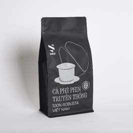
Cay
Krông NăngVietnamese Phin
Chắc · có lực · dứt khoát
Đất bazan dày và giàu nội lực. Cấu trúc vị hiện lên rõ ngay từ cái chạm đầu tiên.
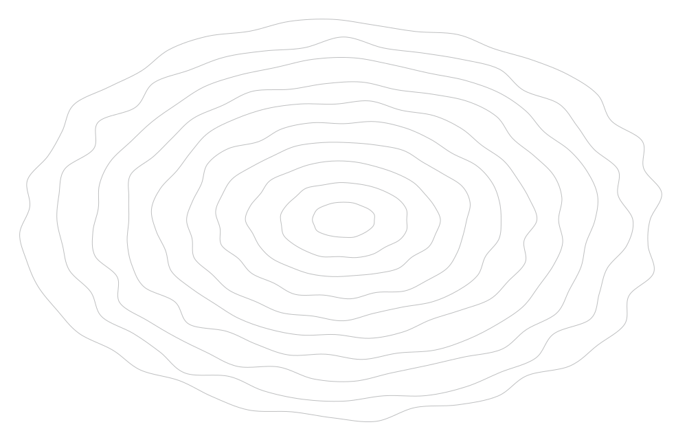
Từ Buôn Ma Thuột, chúng tôi bắt đầu một hành trình rất đơn giản: làm cà phê Việt Nam theo cách đúng.
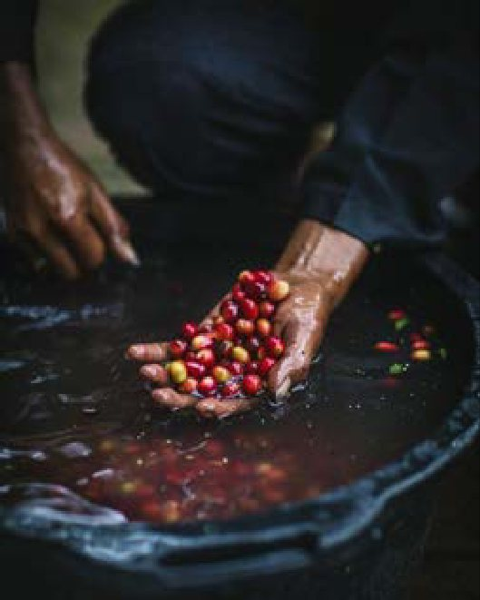
Fine Robusta từ cao nguyên Việt Nam
Chúng tôi không hỏi làm thế nào cho ngon. Chúng tôi hỏi làm thế nào cho đúng — và câu trả lời buộc phải đi hết chặng đường, từ gốc cây đến đáy tách.
Đúng trong cách trồng và thu hái. Đúng trong cách sơ chế và rang. Đúng trong cách làm việc với người nông dân, để từng giọt mồ hôi của họ rơi xuống là xứng đáng. Và đúng cả trong cách kết nối với người uống.
Fine Robusta là cà phê Robusta được đánh giá đạt ngưỡng “Fine” bởi Q-Grader, theo tiêu chuẩn CQI & SCA. “Fine” không đơn thuần là ngon — đó là kết quả của kiểm soát chất lượng nghiêm ngặt ở từng công đoạn.
Chúng tôi không cố biến Robusta thành Arabica. Chúng tôi làm cho Robusta trở thành điều tốt nhất mà nó có thể là.
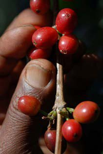
Năm công đoạn. Không công đoạn nào được phép thỏa hiệp. Đây là nơi “đúng” trở thành một việc làm bằng tay.
Cây Robusta trên đất bazan, ở độ cao của Tây Nguyên.
Hơn 500 ha vùng trồng liên kết, canh tác theo hướng bền vững cùng các nông hộ địa phương.
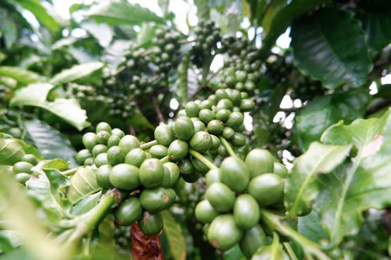
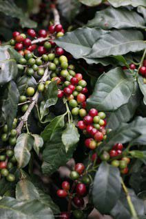
Hái chọn bằng tay. Chỉ quả chín được đi tiếp.
Thu hái và phân loại thủ công là điều kiện đầu tiên để kiểm soát chất lượng — và là điều khó nhất để duy trì.
Men Soul, men trái cây địa phương, men rượu cần.
Với mong muốn lưu giữ và phát triển văn hoá Tây Nguyên, SOUL nghiên cứu và thử nghiệm phương pháp sơ chế riêng, tạo nên hương men đặc trưng không thể lẫn.
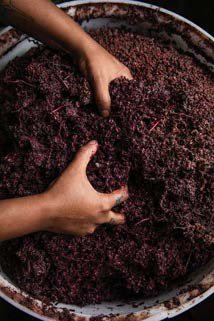
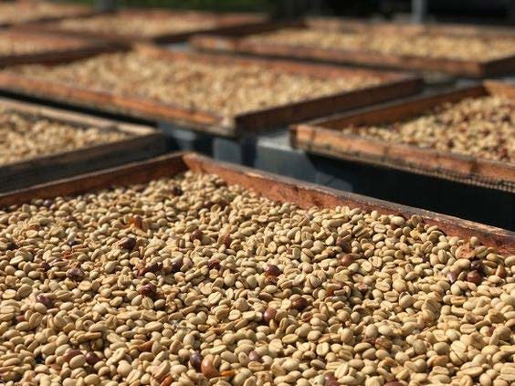
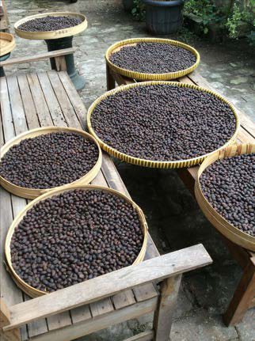
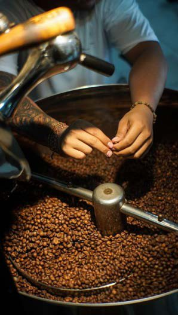
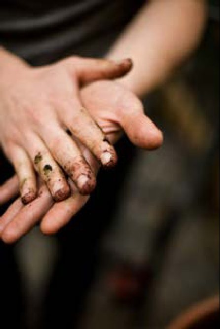
Mỗi lô một profile. Rang để giữ, không để che.
Năng lực rang trung bình 20 tấn/tháng, tối đa 60 tấn/tháng, trên dây chuyền đạt chứng nhận an toàn thực phẩm.
Phin, espresso, brewing, cold brew — bốn cách để cùng một hạt lên tiếng.
Chúng tôi tôn trọng gu của từng người uống. Nhiệm vụ của SOUL là để hạt cà phê không bị mất đi điều gì trên đường đến tách của bạn.
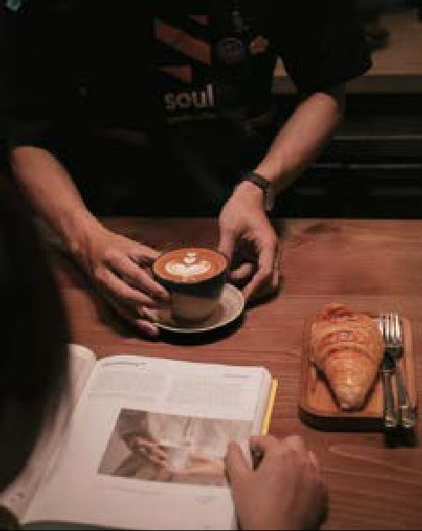
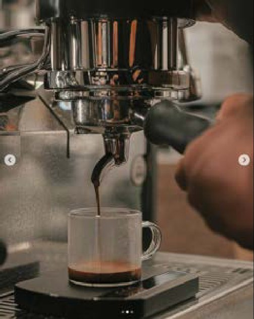
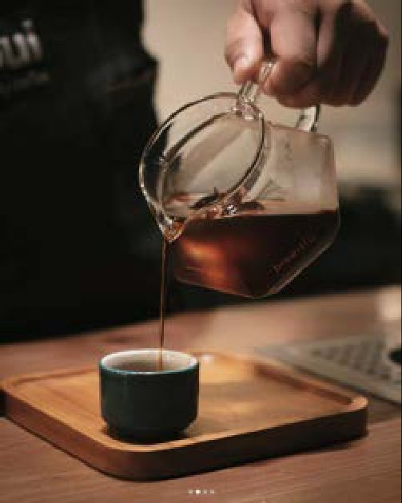
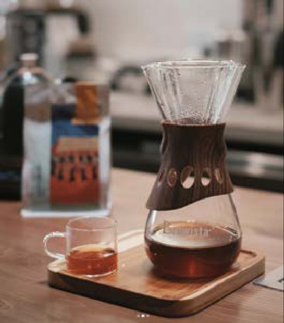
The Journey of Senses
Sense là giá trị đầu tiên trong hệ giá trị của SOUL: kết nối cảm xúc qua từng điểm chạm giác quan. Âm thanh của cối rang. Hương bánh mới. Chất liệu của bao bì. Cách một barista kể chuyện.
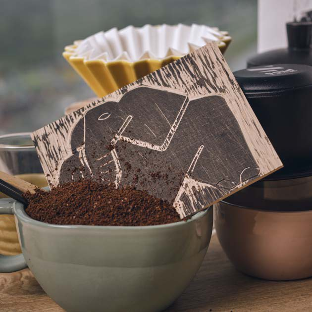
Tiếng cối xay trước khi quán mở cửa.
Hương men còn đọng lại sau khi rang.
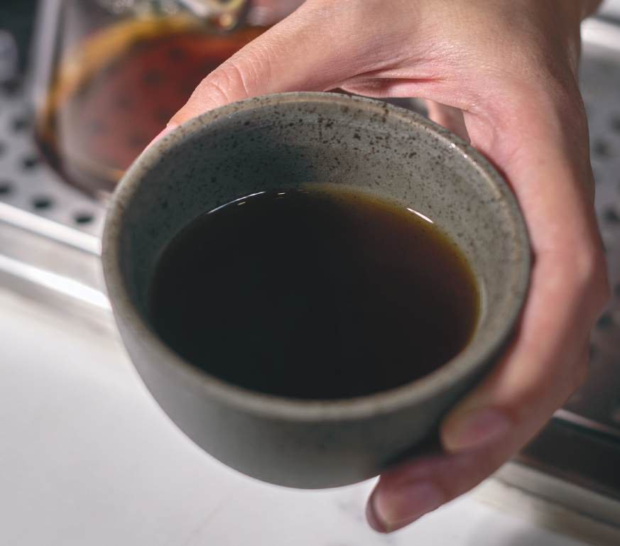
Men gốm còn ấm trong lòng bàn tay.
Màu của dòng chiết đổi theo từng giây.
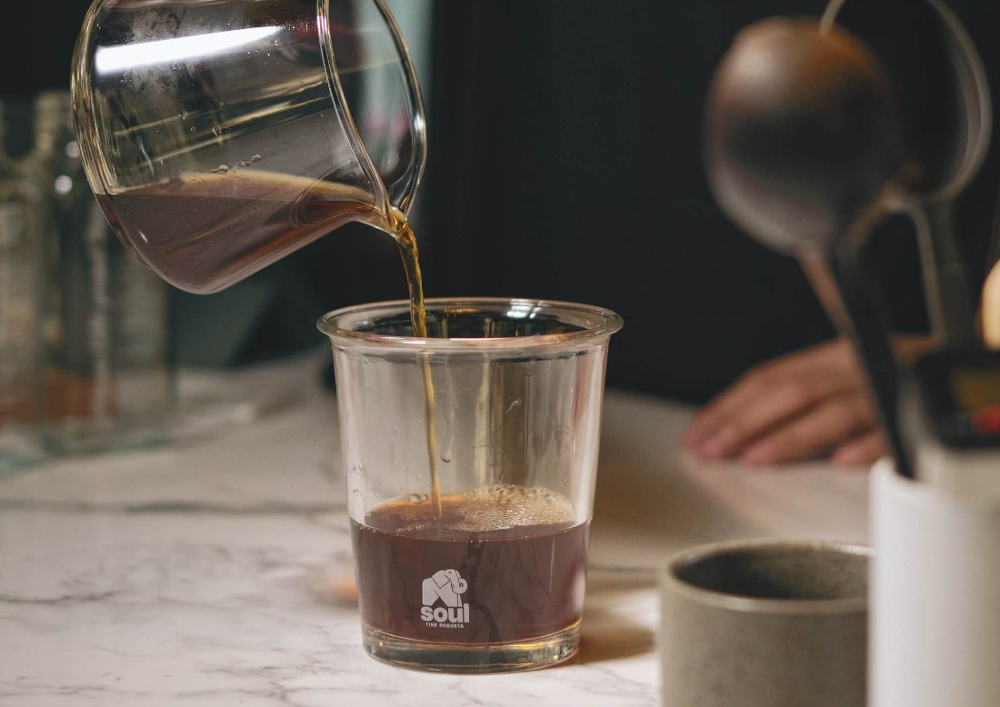
Hậu vị béo bùi ở lại lâu hơn ngụm cuối.
Bốn tính cách hương vị, gọi tên bốn sắc thái của Tây Nguyên. Mỗi sản phẩm nối một vùng đất với một cách pha, và một cảm giác ở lại sau khi tách cà phê khép lại.
Khám phá Soulful Collection
Chắc · có lực · dứt khoát
Đất bazan dày và giàu nội lực. Cấu trúc vị hiện lên rõ ngay từ cái chạm đầu tiên.
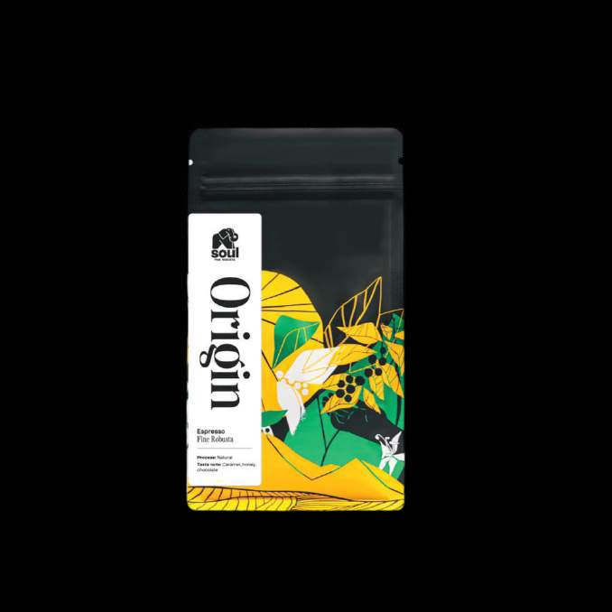
Mạnh · rõ · dễ nhớ
Vùng đất mà chính tên gọi đã là một dấu ấn của cà phê Việt Nam.
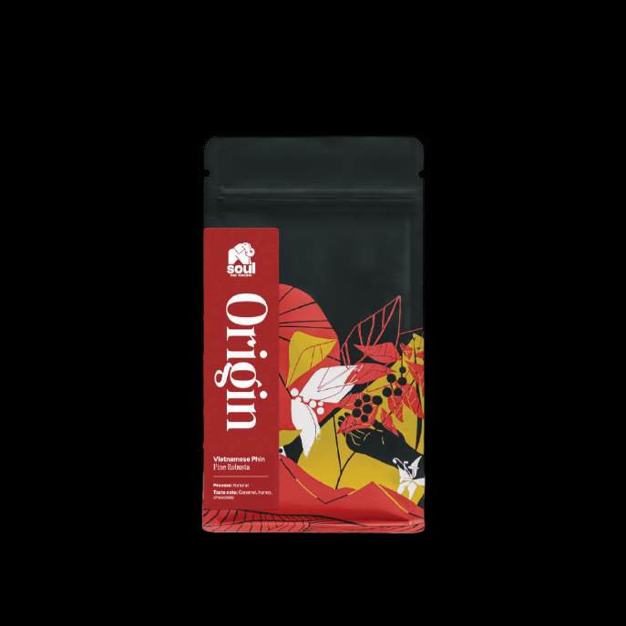
Nhiều tầng · mở dần
Vùng đất của độ chuyển và ký ức. Hương không đi thẳng, mà mở ra theo từng lớp.
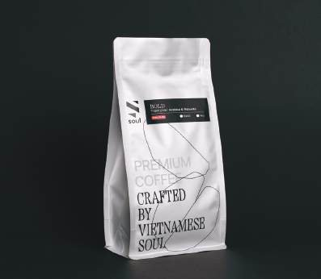
Dịu · cân bằng · ở lại
Vùng đất của thích nghi và bền bỉ. Ngọt đến chậm hơn, rồi lưu lại lâu hơn.
Cảm xúc là phần đọng lại. Nhưng trước đó, chất lượng phải đo được — bằng điểm cup, bằng chứng chỉ, bằng sản lượng và bằng diện tích vùng trồng.
Năm thứ ba liên tiếp giữ Top 1 tại Vietnam Coffee Producer Competition.
Canh tác cùng các nông hộ địa phương theo hướng bền vững.
Tối đa 60 tấn/tháng. Chứng nhận an toàn nhà máy và vệ sinh thực phẩm.
Thương hiệu tiên phong trong lĩnh vực Fine Robusta tại Việt Nam.
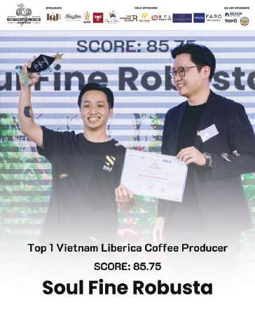
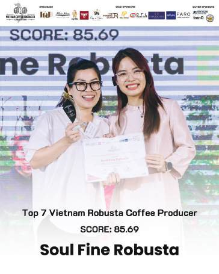
Chúng tôi mang Fine Robusta Việt Nam đi gặp thế giới — không phải để chứng minh, mà để có mặt trong cuộc trò chuyện.
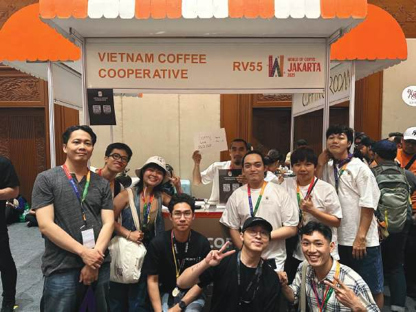
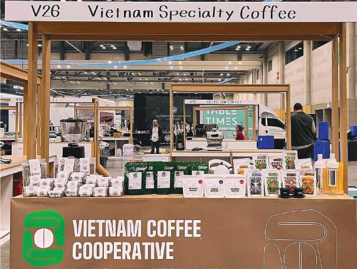
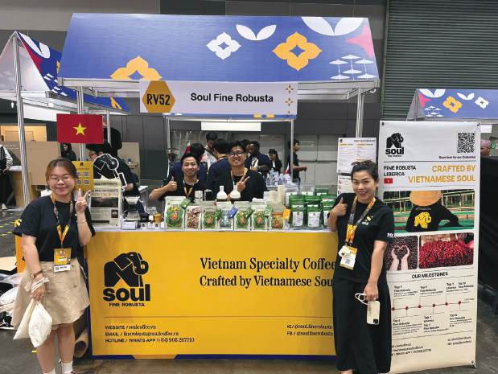
SOUL đồng hành với doanh nghiệp từ nguồn nguyên liệu đến vận hành: cà phê nhân xanh, cà phê rang, thiết kế menu & quầy bar, đào tạo và tư vấn.
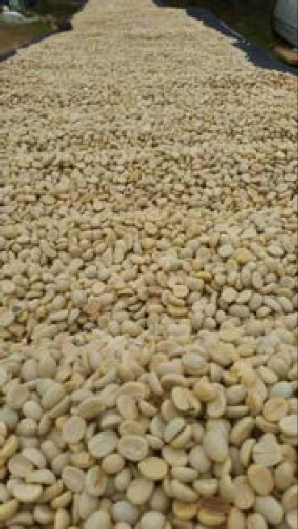
Fine Robusta, Specialty Arabica và Premium — cung cấp cho nhà rang trong nước và xuất khẩu.
Rang theo profile riêng, đóng gói bán tự động, đạt chứng nhận an toàn thực phẩm.
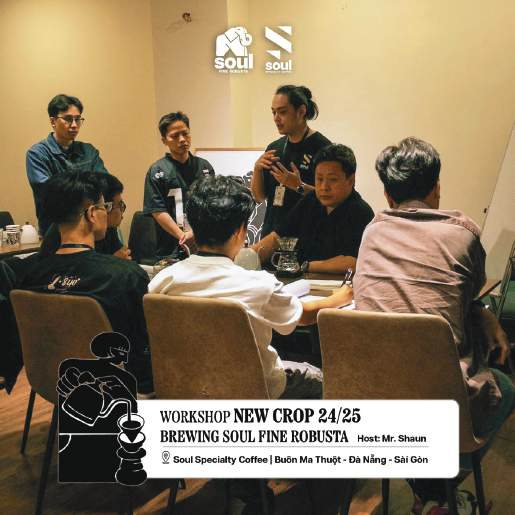
Lên ý tưởng món, thiết kế menu và thiết lập quầy bar cho chuỗi quán, nhà hàng, khách sạn.
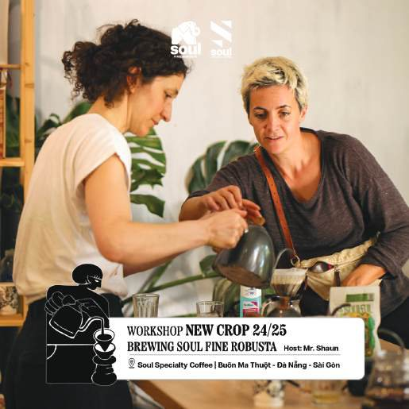
Đào tạo vận hành, cảm quan và pha chế cho đội ngũ của đối tác.
Soul Specialty Coffee — nơi mọi thứ chúng tôi làm ở vùng trồng và xưởng rang cuối cùng đến được tay bạn.
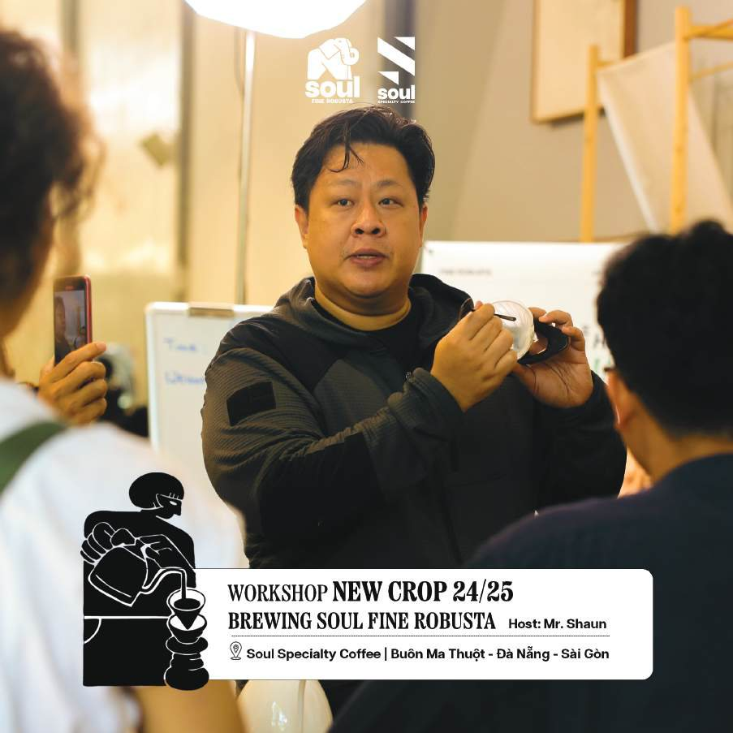
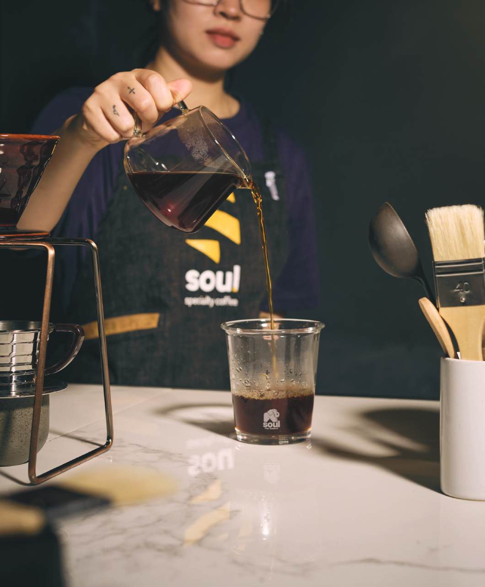
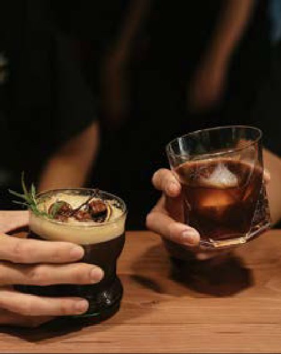
Cupping, tasting, brewing, latte art. Chúng tôi mở workshop không để bán thêm, mà để có thêm người hiểu Fine Robusta Việt Nam.
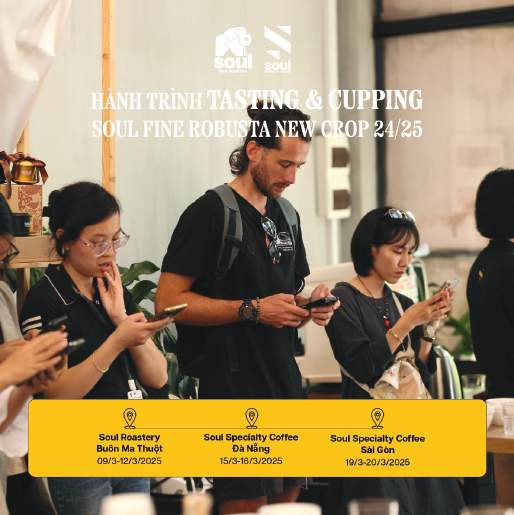
Đi qua Buôn Ma Thuột, Đà Nẵng và Sài Gòn với các mẫu cà phê mới của mùa vụ và những phương pháp lên men bằng men bản địa.
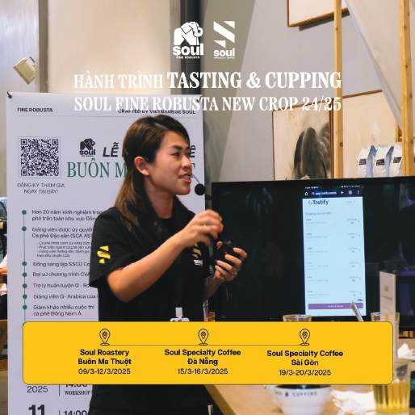
Đồng sáng lập Soul Specialty Coffee & Soul Fine Robusta, tiên phong trong việc định hình và nâng cao giá trị Fine Robusta Việt Nam.
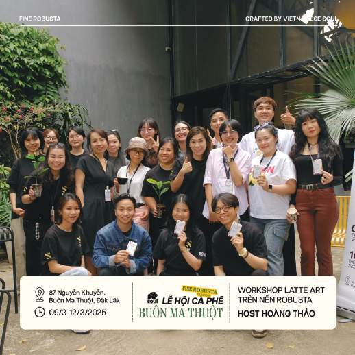
Hoàng Thảo — Quán quân Vietnam National Latte Art Championship 2019, Top 10 World Latte Art Championship 2019.
Mẫu đạt Top 1 là Fine Robusta TR Natural Cần Wine Yeast — năm thứ ba liên tiếp SOUL giữ ngôi đầu tại VCPC.
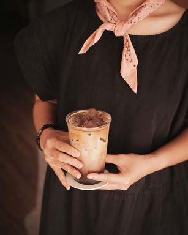